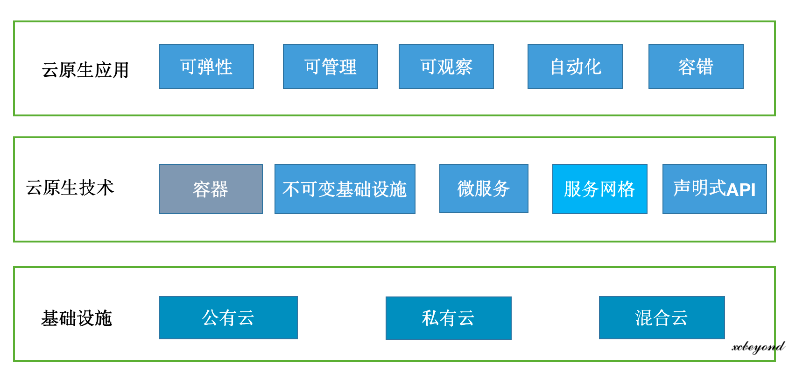
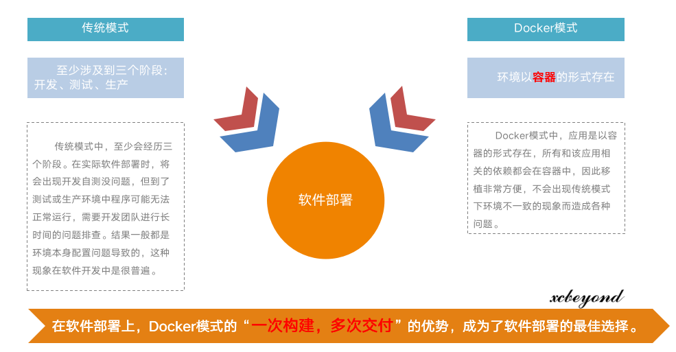
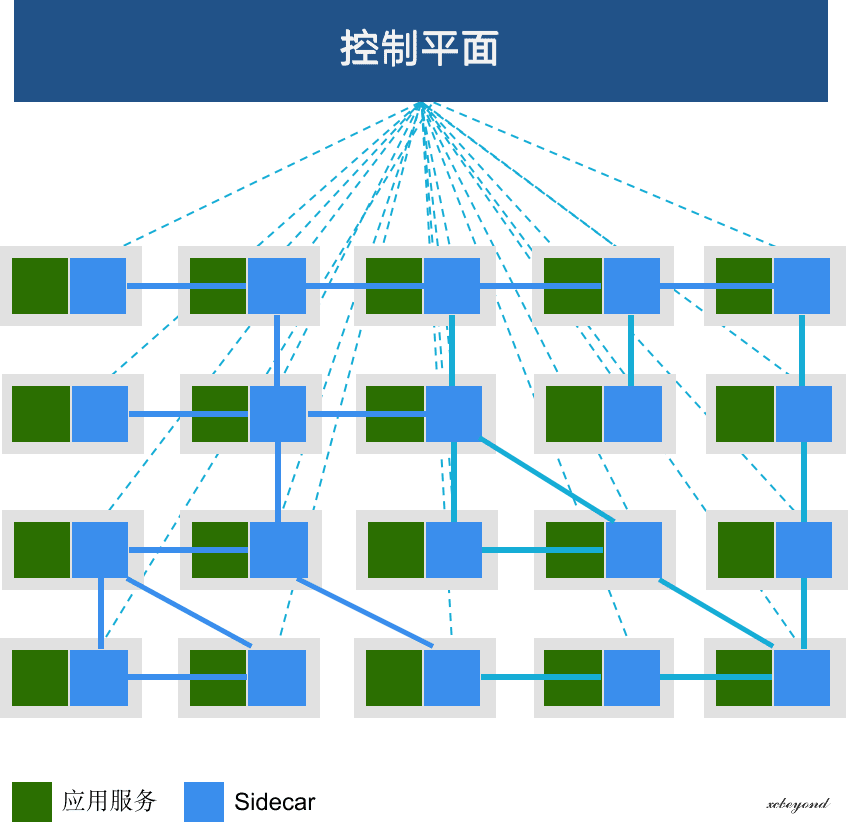
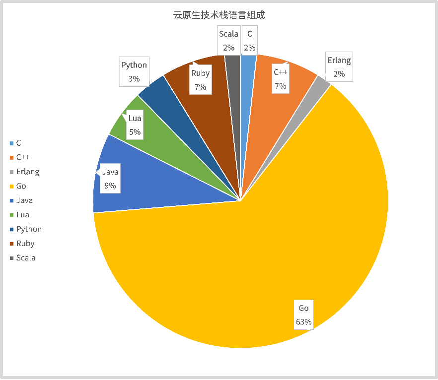

2021 即将结束，又到了一年一度的盘点时刻，今年该说点啥？
回顾这一年，还是从盘点技术说起，聊一聊我的云原生拥抱之路，在云原生之路上我都从哪些方面入手，学到了什么。
1、背景
之前一直专注于微服务体系架构的研发工作，以 Java 语言作为我的第一程序语言，并伴随了我很多年。随着 2020 年 8 月份工作的变动，全身投入到新架构体系产品的技术预研及研发中，从此开启了我的云原生之路。
IT技术的演进，行业的竞争，促使了软件产品的迭代更新。传统微服务架构产品在当下显得力不从心，为寻求市场竞争力，只有向前迈出新的一步，紧跟时代步伐，才有可能立足于市场。
今天，我将站在云原生的代表技术出发，通过这些技术来阐述我的云原生之路。
2、云原生
先来回顾、重温一下云原生的概念吧！
云原生是近几年云计算领域炙手可热的话题，云原生技术更是成为驱动业务增长的重要引擎。提及云原生我们不得不提及 CNCF（CNCF：Cloud Native Computing Foundation，云原生计算基金会），CNCF 的成立标志着云原生从技术理念转化为开源实现，并给出了目前被广泛接受的定义：
云原生技术有利于各组织在公有云、私有云和混合云等新型动态环境中，构建和运行可弹性扩展的应用。云原生的代表技术包括容器、服务网格、微服务、不可变基础设施和声明式 API。

3、微服务
微服务不用多说，在 2022 年来临之际应该没有人不了解微服务吧。
微服务是服务架构演进的产物，在历经单体架构、垂直架构、面向服务的架构（SOA）之后，微服务架构（MSA）可视为 SOA 架构的分布式实现方式。随着业务发展与需求不断增加，单体应用功能愈发复杂，应用迭代效率由于集中式研发、测试、发布、沟通模式而显著下滑。

微服务架构本质上是通过承受更高的运维复杂度来换取更好的敏捷性，其优势在于小而治之、去中心化，但也导致基础架构的需求、成本和复杂性激增。
4、容器
早在 2018 年就开始接触容器，开启了我的容器之路，其中 Docker 作为容器化的一种典型方案或者技术，入门比较简单。
一次构建，多次交付成为当时吸引我的主要原因，在软件部署层面，传统模式和 Docker 模式存在着如下差异：

容器是将进程有效的划分一个独立空间，以便在独立的空间之间平衡资源使用冲突的技术。本质上，容器是一种特殊的进程，其核心功能是通过约束和修改进程的动态表现创造出一个“边界”，此外，其资源限制能力、以及基于镜像功能表现出的“强一致性”，都使得容器技术成为云原生最关键的底层技术之一。
2021 年可以称得上是容器大规模应用的一年。基于 Kubernetes 来屏蔽异构环境的差异，搭建分布式云架构已经成为企业和云厂商的共识。
对于容器而言，在此给初学者一些建议：掌握/理解容器相关概念、基本操作即可，如容器技术的特征、Docker部署、Docker镜像制作等，其他内容可结合后续 Kubernetes 的学习、项目实际应用中加强。
5、Kubernetes
Kubernetes 是我 2020 年底开始接触的东西，作为容器编排的优秀作品，被广为使用。在学习的过程中也输出了部分文章：
更多内容可持续关注：kubernetes分类 或 kubernetes实践手册
如今，Kubernetes 项目不仅是容器技术的事实标准，更成为整个云原生体系发展的基石，重新定义了基础设施领域对应用编排与管理的各种可能。
在整个云原生生态中，Kubernetes 项目起到了承上启下的作用。对上，Kubernetes 暴露出基础设施能力的格式化数据抽象，如 Service、Ingress、Pod、Deployment，都是 Kubernetes 本身原生 API 为用户暴露出来的能力。而对下，Kubernetes 提供了基础设施能力接入的标准接口，如 CNI、CSI、DevicePlugin、CRD，让云能够作为能力提供商，通过标准化的方式把能力接入到 Kubernetes 的体系中。
伴随着微服务、DevOps 等技术理念的发展，基于 Kubernetes 可扩展能力的开放应用平台将取代 PaaS 成为主流，而云的价值会回归应用本身，越来越多的开源项目会以云原生理念去开发、部署和运维，最后直接演进成为一种云服务。
6、服务网格
服务网格，是今年新接触的内容之一，更是开启我云原生技术栈的核心，截止目前为止算是入门吧，更多扩展、进阶内容还需后续深入学习。
想进一步了解服务网格的背景和概念可参考之前写的一篇文章：全方位解读服务网格（Service Mesh）的背景和概念

服务网格中的典型代表框架为 Istio，学习服务网格的重点也就放在了对 Istio 的学习。目前市场上对于 Istio 的资料非常少，主要借助于 istio官网。
在学习过程中，已输出一本精简版的PDF版学习资料（暂未公开），其中一部分已发布在：Istio 实践手册。
7、Go 语言
Go 语言被称为云时代的语言，在云原生技术栈中 Go 语言占据很大的比例。

比如，Docker、Kubernetes 等众多云原生领域的优秀技术或框架都是基于 Go 语言开发的，所以掌握 Go 语言比不可少。今年，我也是从零开始全身投入到 Go 的语言学习当中，将 Go 语言作为我的第二大开发语言，利用 Go 语言开发公司新产品的研发。
在经过一年时间的学习及产品实践，总结了一套 Go 语言的快速学习路线供大家参考：
-
第一阶段（基础语法）
快速了解基本语法，如：数据类型、条件、循环等，熟悉Go的编程习惯。可写代码片段。
-
第二阶段 （高级语法）
逐步了解更高级的特性，如：channel、并发、接口等。
-
第三阶段 （常用代码库）
熟练掌握常用的代码库，如：fmt、Log、IO、Strconv、Template等。可写demo。
-
第四阶段 （常用框架）
熟练掌握常用的框架，如：Cobra（命令行）、Gin（Web框架）、Gorm（ORM框架）等。可写项目。
-
第五阶段（阅读源码）
阅读开源项目源码，如：docker、Kubernetes等。可借助开源项目提升自我/项目。
学习过程中，也整理了一些相关学习资料：Go语言实践手册。
8、总结
拥抱云原生，其本质就是拥抱云原生代表技术（容器、服务网格、微服务、不可变基础设施和声明式 API等），掌握这几门代表技术也算是踏进云原生的大门了。后续云原生之路，更多的在于实际的项目/产品中实践，并不断总结、理解。
这就是我 2021 年的技术之路，为新产品的研发，不断向云原生前进，2022 年我将会持续深入学习、分享，将站在用户体验的角度、以技术驱动业务为价值目标，继续我的2022。
参考资料：
- 《云原生发展白皮书(2020年).pdf》
- 《云原生2.0白皮书.pdf》
- 解读云原生的 2021：抢占技术 C 位，迎来落地大爆发